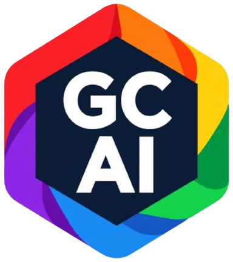

Custom appearance
A visual identity that represents your assistant. Set its colors and style, and choose your wallpaper.

An AI assistant with incredible features on the way — tailored to you with a customized appearance, voice, and wake word.
Runs in your browser. Computers only — Windows, Mac, or Linux.
The free demo of Ondra. Open it in your browser and start talking.
A visual identity that represents your assistant. Set its colors and style, and choose your wallpaper.
Say the wake word and Ondra answers with a chime you choose, so you know it's listening.
Speak instead of typing. Choose from multiple voices for replies, or mute responses entirely.
Ask for the weather or look up a recipe — answers appear in a clean popup with live results.
No download and no payment required. Runs entirely in your browser.
The demo works on computers only — Windows, Mac, or Linux. It isn't available on phones or tablets.
Ondra is a GCAI project currently in development.
Generate images as well as text.
Stay informed with briefings read aloud.
Full music support, built in.
Enter codes to unlock new styles for your AI, new voices, add-ons, and more.
Share your screen and Ondra talks you through it — "click the blue button, top right." It spots mistakes as you make them and keeps you moving.
Describe the app or game you want. Ondra creates the icon and the full working thing, then files it in your App Library.
Ask the time in another place — "what time is it in London, England?" — and the clock shows the place name with the time on both the manual and digital faces.
Ask what's on your computer, how much storage is left — anything you'd normally dig through Settings or Files to find.
Link your accounts and services so Ondra can get things done across them, just like you would.
Saveable, editable notes — jot things down and come back to them anytime.
Tell Ondra where you want to go and it opens the tab for you.
Generate an email from a sentence, then send it when the wording is right.
A reward for every month you're subscribed — a thank-you for sticking around.
Design your AI's icon — pick a background color, an icon, and the icon's color. It becomes your AI's icon in the browser tab.
Ondra is in development. The demo stays free.
Yes. The demo is completely free — no account, no payment, no install. Open it in your browser and go.
A computer (Windows, Mac, or Linux) with a modern browser such as Google Chrome. The demo isn't available on phones or tablets.
The Ondra Demo is the free demo: a customizable appearance, wake word, voices, weather, recipes, and clock. Ondra is the full version, with incredible features on the way — including Screen Coach, App Maker, image generation, news briefings, and music.